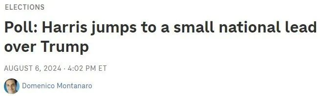

据NPR和国会山报8月7日报道根据NPR/PBS新闻/Marist的最新民调，贺锦丽似乎已经扭转了总统大选的局势，目前以51%对48%领先于前总统川普。而美国人对贺锦丽选择明尼苏达州州长蒂姆·沃尔兹作为竞选伙伴的态度却各有不同，既有热情，也有不确定性。

相关报道截图
这一结果比贺锦丽两周前接棒大选时高出4个百分点。在提供第三方选择的情况下，贺锦丽也保持着3个百分点的领先优势（48%对45%）。
推动她崛起的是黑人选民、拥有大学学位的白人女性以及自认为是政治独立人士的女性。与她刚上任时相比，她在白人选民中的支持率提高了20到30个百分点，这导致了郊区选民和白人选民的总体支持率的提高。
对经济的负面看法并没有像对拜登那样持续到贺锦丽身上。川普在经济方面仍然更受信任，但只比贺锦丽（51%对48%）高出3个百分点。而在6月份时，他比拜登（54%对45%）高出9个百分点。
贺锦丽在处理移民问题上的态度也有所改善，但川普在这个问题上的信任度仍然高出6个百分点（52%对46%）。贺锦丽最擅长的议题是处理堕胎权问题，她在这方面有15个百分点的优势。
这项调查是在上周四到周日进行的，之后贺锦丽选择了明尼苏达州州长蒂姆·沃尔兹作为她的竞选伙伴。Marist用英语和西班牙语通过手机、座机和在线调查小组采访了1613名成年人。该调查的误差幅度为正负3.3个百分点，这意味着调查结果可能高出或低于3个百分点。
女性、黑人和无党派选民转向贺锦丽
由于贺锦丽在某些群体中的支持率有所提高，她在郊区选民和白人选民中的地位也得到了提高。
但现在有22个百分点的性别差距，比7月份川普和拜登之间的差距还要大。贺锦丽目前在女性选民中领先13个百分点（55%对42%），但在男性选民中落后9个百分点（54%对45%）。考虑到误差幅度，这与出口民调显示的2020年总统大选结果接近。
贺锦丽获得的最大支持来自黑人选民。几周前，她在黑人选民中领先川普23个百分点，当时许多选民都表示尚未做出决定，但现在她已经领先了54个百分点。贺锦丽正在接近民主党需要得到黑人选民支持的地区。
一些似乎在考虑川普的黑人选民已经离开了他，因为他的支持率下降了10个百分点。
贺锦丽现在也赢得了独立选民的支持，这是拜登没有做到的。贺锦丽在独立选民中的支持率上升了9个百分点（53%对44%）。上个月她的支持率下降了14个百分点。7月初，川普以4个百分点的优势领先拜登。
贺锦丽在白人选民中的支持率也有所提高。她在这次调查中的白人选民支持率从40%上升到46%，接近拜登的支持率，这对民主党人来说是非常高的。事实上，自1976年吉米·卡特（Jimmy Carter）以来，没有一位民主党人在总统选举中获得如此高的白人选民支持率。拜登在2020年赢得了41%的选票，巴拉克·奥巴马在2008年获得了43%选票。
这种改善主要是由于受过大学教育的白人女性。没有学历的白人选民是川普的核心基础群体，他们非常支持川普，而且他们的优势没有改变。然而，三分之二受过大学教育的白人女性现在站在贺锦丽的阵营，这将远远高于2020年支持拜登的比例。
她也赢得了老年选民的支持。例如，贺锦丽在婴儿潮一代中领先川普11个百分点（55%对44%）。
拉美裔选民也开始支持贺锦丽。58%的人表示他们现在会投票给她，而上个月这一比例为51%。这仍然低于拜登在2020年赢得的65%的选票。
目前，贺锦丽在45岁以下选民中的支持率并不理想。拜登在2020年以14个百分点的优势赢得了他们的支持。贺锦丽和川普现在在这个群体打成了平手。不过，贺锦丽在拉拢选民方面做得比拜登好得多的地方在于，当有第三方加入时，他能留住这些选民。例如，拜登在Z世代/千禧一代中的支持率下降了两位数。另一方面，当受访者可以选择两大政党以外的候选人时，贺锦丽保持了领先优势，并且略有扩大。
年轻选民投票率飙升或使贺锦丽受益
黑人、拉丁裔和年轻选民表示，由于贺锦丽参加竞选，他们更有动力投票。
黑人选民、拉丁裔选民和Z世代/千禧一代选民表示肯定会投票的人数都跃升了两位数。
今年7月，只有71%的黑人选民、68%的拉丁裔选民和65%的Z世代/千禧一代选民表示他们肯定会投票，在所有群体中比例最低。
但现在，这一比例在黑人选民中高达81%，在拉丁裔选民中为84%，在Z世代/千禧一代中为80%。与之前的调查相比，这一比例更接近于白人选民的水平。
第三方候选人支持率降低
随着贺锦丽参加竞选，人们似乎正在抛弃第三方候选人。
所有的第三方候选人都得到了自Marist 4月份开始调查以来的最低支持率。以独立候选人身份参选的小肯尼迪的支持率降至5%。同样以独立候选人身份参选的康奈尔·韦斯特（Cornel West）教授、绿党候选人吉尔·斯坦（Jill Stein）和自由党候选人蔡斯·奥利弗（Chase Oliver）的支持率都在1%或以下。
肯尼迪在那些对川普和贺锦丽都持负面看法的选民中仍然表现最好，吸引了大约三分之一的选民。
选民对谁会赢得大选看法存在分歧
上个月，认为川普会赢得大选的受访者高出20个百分点（59%对39%）。在拜登退选后，现在的比例为48%对48%。
值得注意的是，在独立选民中，从58%的人认为川普会赢，转变为52%的人认为贺锦丽会赢。
人们对自己的选择也更满意，但依然只有47%的人表示满意，而50%的人表示不满意。6月份，对自己的选择感到满意的人（42%）和不满意的人（52%）之间的差距为10个百分点。
诚实守信是总统最重要的品质
虽然对民主党人和独立选民来说，诚信是最重要的品质，但多数共和党人表示，“强有力的领导人”对他们来说最重要。
国会选举将势均力敌
47%的人表示他们希望看到民主党控制国会，而45%的人表示希望共和党控制国会。这2个百分点的差距与6月份持平。
传统上，民主党人需要在这方面取得更大的优势才能取得显著进步——2022年，当他们阻止共和党人赢得一波众议院席位时，他们在Marist民调中领先了4个百分点。2020年，民主党领先8个百分点，但他们失去了众议院席位。2018年他们的优势为6个点，取得了显著增长。2014年共和党赢得席位时，共和党的优势为5个点。
国会选票和席位数量的变化并不总是完全相关。例如，在这个周期中，许多人居住在纽约、加州和费城周边的郊区，在这些地区，民主党人在总统选举中具有优势，因为他们的核心选民群体的投票率更高。
拜登的支持率上升
现在拜登已经退出竞选，但他的支持率正在反弹。
拜登的支持率现在是46%，这是自2023年2月以来的最高水平，比上个月上升了5个百分点。
美国人对沃尔兹看法分歧大
民调机构YouGov周二晚间公布的一项调查显示，35%的美国人认为沃尔兹是贺锦丽竞选总统的“好”或“可能的最佳”人选，35%的人表示不确定。只有16%的人认为沃尔兹是“糟糕的选择”或“最糟糕的选择”。
民主党人对他的热情更高，61%的人认为他是一个“好选择”或“最佳选择”，只有2%的人持相反意见。在无党派人士中，29%的人认为沃尔兹是“好选择”或“最佳选择”，而15%的人认为他是“坏选择”或“最差选择”。
共和党人对沃尔兹的选择持更消极的态度，12%的人认为沃尔兹是“好选择”或“最差选择”，34%的人持相反意见。大约40%的共和党人对此表示不确定。
近一半的受访者（45%）表示，他们对沃尔兹的了解不够，无法确定他们对他的看法是好是坏。大约35%的人说他们至少对州长有“一些”好感，而五分之一的人说他们有相反的看法。
最近几天，沃尔兹因给川普和万斯贴上“怪人”的标签而引起全国关注，成为贺锦丽竞选伙伴的黑马竞争者。
民调是在贺锦丽宣布选择沃尔兹作为副总统候选人几小时后进行的。
贺锦丽赞扬了沃尔兹对中产阶级家庭的支持，以及他在国民警卫队服役和担任教师的经历。
在YouGov的民意调查中，这位北极星州的领导人似乎在民主党人中很受欢迎。总体而言，58%的民主党人对沃尔兹持正面看法的可能性大于持负面看法的可能性。民调专家指出，这些比率在不同年龄、性别或地区的民主党选民中是相似的。
YouGov的调查是周二在网上对3003名美国成年人进行的。误差幅度约为2.5个百分点。